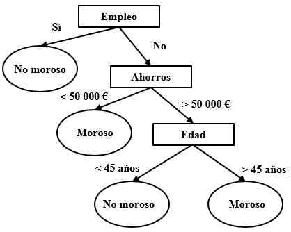
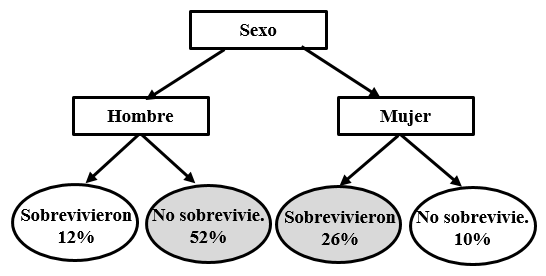
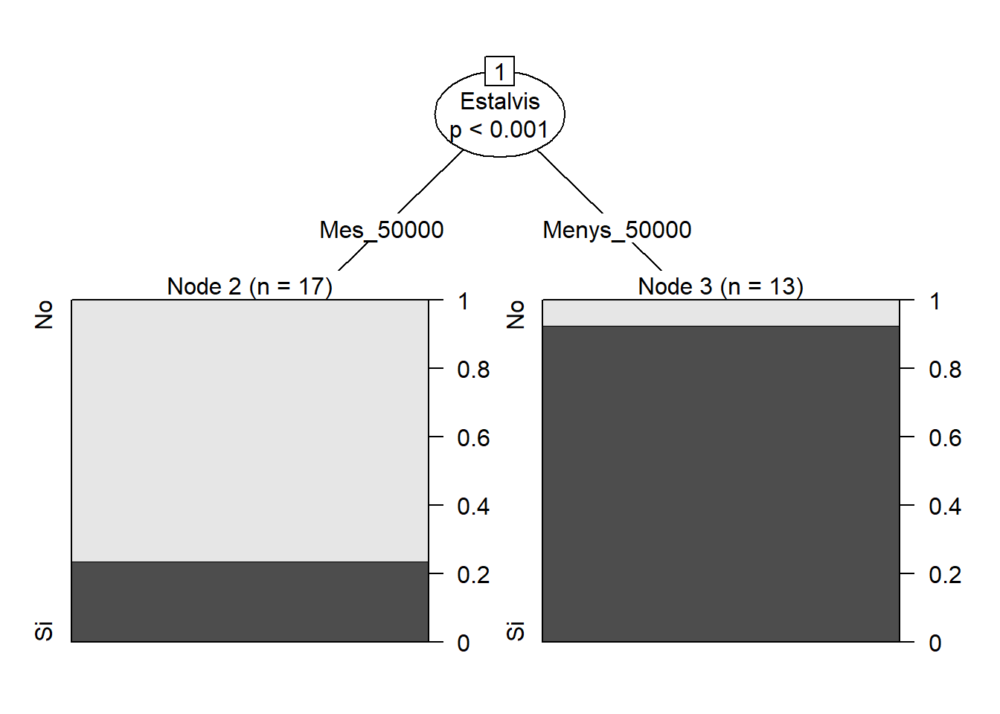
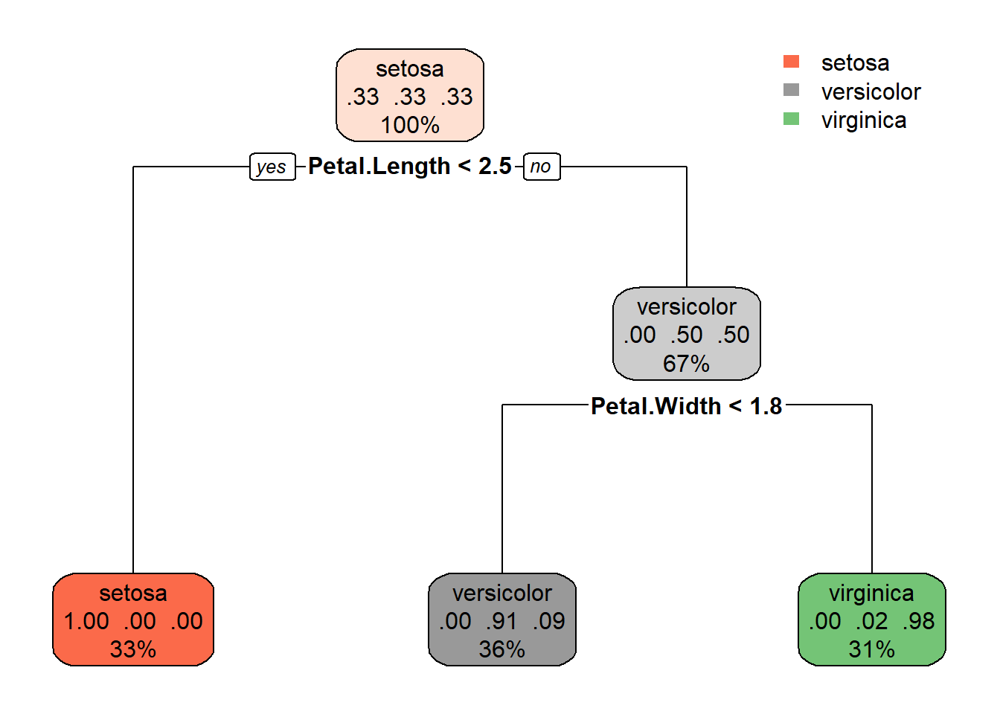
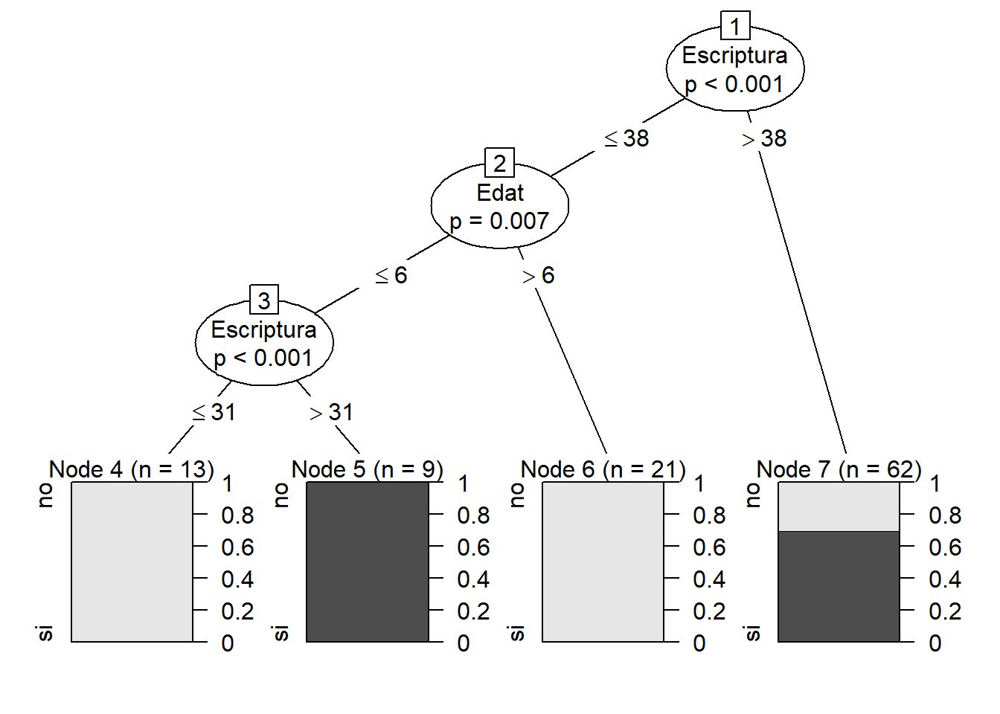
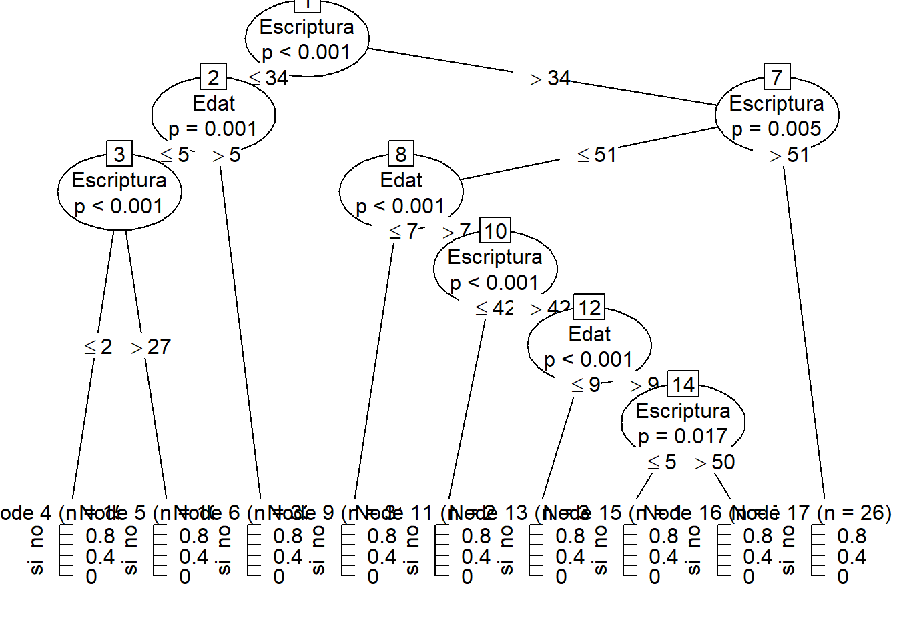

Arbres de decisió
1 Arbres de decisió
Un arbre de decisió és un tipus d’algoritme que consisteix en una sèrie de preguntes de resposta «sí» o «no» que porten a preguntes successives fins a prendre una decisió. Es basen en una estructura jeràrquica en forma d’arbre, on cada node representa una condició sobre una variable, cada branca correspon a un resultat possible d’aquesta condició i cada fulla indica una predicció o classe final. Aquests algoritmes són populars per la seva simplicitat i facilitat d’interpretació. Funcionen dividint el conjunt de dades en subconjunts més petits mitjançant regles basades en les variables d’entrada, buscant maximitzar la separació entre classes.
La següent figura mostra un exemple d’arbre. Partint de la part superior, l’arbre segmenta les dades de manera que cada costat correspon a un únic camí. Tornant a l’exemple de la morositat que vam fer servir al Tema 2, imaginem que volem classificar un subjecte de 40 anys, sense ocupació i amb uns estalvis de 115.000 €. Començant en la part superior, com que no té «ocupació», prenem el camí de la dreta. El següent node és el dels «estalvis». Com són superiors a 50 000 €, prenem de nou el camí de la dreta fins al node «edat». El valor és 40, de manera que anem a l’esquerra que ens indica que la predicció és que aquest subjecte no serà morós. Habitualment, més que saber la categoria en què queda classificat un subjecte, el que retornarà l’algoritme serà la probabilitat que acabi dins d’aquesta categoria. En aquest cas, les branques de l’arbre inclouran les probabilitats en comptes d’un valor simple.
Vegem un segon exemple. La nit del 14 al 15 d’abril de 1912, el «Titanic» es va enfonsar en xocar contra un iceberg en el seu viatge inaugural. Van sobreviure unes 700 persones d’entre les 2.200, entre passatgers i tripulació, que viatjaven en el vaixell. Diversos estudis han mostrat que les possibilitats de salvar-se depenien de diversos factors.
Podem intentar construir un algoritme que sigui capaç de predir si un determinat viatger se salvarà o no. Per a això comptem amb un fitxer amb les dades corresponents a 1309 passatgers disponible en https://www.kaggle.com/datasets/yasserh/titanic-dataset. Entre les variables predictores trobem la classe en la qual viatjava cada passatger («pclass» amb tres possibles valors: “primera”, “segona” o “tercera”), el tractament (“Mr”, “Mrs”, “Miss”, “Master”, etc.), el sexe («sex»), l’edat («age»), la tarifa («fare») o el port d’embarcament («embarked» que adopta tres valors: “Southampton”, “Cherbourg” o “Queenstown”), entre altres variables. La variable de resposta («survived») indica si cada passatger va sobreviure (“1”) o no (“0”).
L’exercici és purament teòric perquè el succés no es repetirà, però pot resultar un repte intel·lectual. El portal Kaggle.com inclou competicions en ciència de dades seguint sempre la mateixa dinàmica: s’ofereix als participants un conjunt de dades (training set) per a construir el seu algoritme i, a continuació, es mesura el rendiment amb un nou fitxer de dades (test set).
Una manera molt senzilla d’enfrontar-se al problema seria predir que cap viatger va sobreviure. D’aquesta manera tan simple classifiquem correctament el 62% dels casos (el 62% dels passatgers van perdre la vida).
Podem complicar lleugerament l’arbre de classificació i afirmar que tots els homes van morir mentre que totes les dones van sobreviure. Amb aquesta afirmació el nostre algoritme ha millorat i el percentatge de casos classificats correctament s’ha elevat fins al 78% (els marcats en gris en la figura).

A partir d’aquesta formulació tan simple podem explorar si es produeixen millores com a resultat d’introduir regles més sofisticades (per exemple, una nova regla que determini que els homes que viatjaven en primera classe es van salvar mentre que la resta van morir).
Font de les dades del Titanic: es dona un enllaç a Kaggle però no s’aprofita per fer un exemple de R amb aquestes dades (a diferència de morositat, iris i natius, que sí que tenen codi). Si la intenció és deixar el Titanic només per a reflexió teòrica, estaria bé dir-ho explícitament; si no, es podria afegir un quart exemple pràctic amb R, ja que el dataset ja s’ha presentat amb detall.
2 Creació d’un arbre de decisió amb R
2.1 Exemple 1: morositat amb el paquet party
Per fer aquesta activitat recuperarem el dataset sobre morositat del Tema 2. Les dades estan en format character. Per construir l’algoritme, necessitem convertir-les a factor. Ho podem fer camp a camp.
morositat <- read.table("data/morositat.txt", header = T, sep = "\t")
morositat$Estalvis <- as.factor(morositat$Estalvis)
morositat$Habitatge <- as.factor(morositat$Habitatge)
morositat$Morositat <- as.factor(morositat$Morositat)També és possible fer la transformació per a tot el dataframe amb el paquet dplyr que forma part de tidyverse.
library(tidyverse)
morositat <- morositat %>%
mutate_if(is.character, as.factor)Ara crearem un arbre de decisió que ens permeti determinar la probabilitat que un nou client sigui o no morós. Per a això, utilitzarem el paquet party. Aquest paquet té una funció anomenada ctree() que serà la que usarem per crear l’arbre. La seva sintaxi bàsica és ctree(formula, data). En formula indicarem la variable resposta i les variables predictores i en data les dades amb els quals alimentarem l’algoritme.
library(party)
arbre_morositat <- ctree(formula = Morositat ~ Estalvis + Habitatge, data = morositat)A continuació, visualitzem l’arbre que resulta ser molt senzill. Recordem que els «estalvis» era la variable més informativa per determinar la probabilitat de morositat. De fet, segons l’arbre, un subjecte amb menys de 50.000 euros d’estalvis té una probabilitat superior al 90% d’esdevenir morós. Aquesta probabilitat està lleugerament per sobre del 20% entre els individus amb més de 50.000 euros.
plot(arbre_morositat)
2.2 Exemple 2: classificació de flors amb el paquet rpart
Per aquest exemple, utilitzarem un segon paquet anomenat rpart. També necessitarem carregar el paquet rpart.plot per representar l’arbre.`
library(rpart)
library(rpart.plot)Hi ha diferències en els tests estadístics que utilitzen party i rpart per crear els arbres i l’un o l’altre poden ser més o menys adient segons les variables estiguin més o menys equilibrades o amb diferents escales.
Encara que tots dos paquets serveixen per construir arbres de decisió, el criteri estadístic que fan servir internament per decidir com dividir cada node és diferent, cosa que pot donar lloc a arbres lleugerament diferents fins i tot partint de les mateixes dades.
-rpart construeix l’arbre buscant, a cada node, la divisió que redueix més la impuresa dels subgrups resultants. Per defecte, en problemes de classificació utilitza l’índex de Gini com a mesura d’impuresa (similar en esperit a l’entropia que ja vam veure al Tema 2, encara que amb una fórmula lleugerament diferent), i continua dividint els nodes fins que arriba a un criteri d’aturada (per exemple, un nombre mínim d’observacions per node). És per això que sovint cal “podar” l’arbre resultant a posteriori per evitar que sigui excessivament complex.
-party (amb la funció ctree) es basa, en canvi, en tests d’independència estadística (concretament, tests de permutació) per decidir si una variable té una relació prou significativa amb la variable resposta com per justificar una nova divisió. Si cap variable supera un llindar de significació estadística en un node determinat, l’arbre deixa de créixer en aquell punt. Aquesta característica fa que ctree tendeixi a generar arbres una mica més “conservadors” i, sovint, no calgui podar-los posteriorment de la mateixa manera que amb rpart.
En la pràctica, aquesta diferència de criteri fa que cadascun dels dos paquets tingui punts forts en situacions diferents: party/ctree sol comportar-se millor quan les variables predictores tenen escales molt diferents entre si o quan hi ha un nombre desigual de categories entre variables (ja que els tests estadístics que utilitza corregeixen aquest biaix), mentre que rpart és més ràpid computacionalment i està més estès, amb més eines complementàries disponibles (com rpart.plot per a la visualització o printcp() per analitzar la complexitat de l’arbre). A la pràctica, per a molts problemes senzills com els que veurem en aquest tema, ambdós paquets solen oferir resultats similars, i la tria de l’un o l’altre és sovint una qüestió de preferència personal o de la disponibilitat d’eines de visualització.
Per al següent exemple, farem servir el paquet iris que conté mesures de tres espècies diferents de flors Iris: “setosa”, “versicolor” i “virginica”.
data(iris)
head(iris)Creem l’arbre de decisió per predir la variable ‘Species’:
arbre_flors <- rpart(Species ~ ., iris)I el representem.
rpart.plot(arbre_flors)
2.3 Exemple 3: classificació de parlants natius amb el paquet party
Una escola d’anglès ha fet una prova de nivell a 200 nens d’entre 5 i 11 anys. Per a cadascun tenim l’edat i el resultat d’una prova d’escriptura i una altra de lectura. Així mateix, sabem si els nens són parlants natius d’anglès o no. A continuació es presenta un extracte amb els 10 primers casos.
natius <- read.table("data/natius.txt", header = T, sep = "\t")
natius$Natiu <- as.factor(natius$Natiu)
head(natius, 10)A partir de les dades d’edat i del resultat de les proves de lectura i escriptura, crearem un arbre de decisió que ens permeti determinar si un nen és parlant natiu d’anglès o no.
En comptes de treballar amb totes les dades, seleccionarem les primeres 105 entrades que emmagatzemem en l’objecte natius_1.
natius_1 <- natius[c(1:105), ]Creem l’arbre utilitzant la funció ctree. Indiquem que la variable que volem predir és la probabilitat que un nen sigui natiu basant-nos en tres variables predictores: edat, lectura i escriptura. Emmagatzemem el resultat en un objecte denominat arbre i el representem.
arbre_natiu <- ctree(formula = Natiu ~ Edat + Lectura + Escriptura,
data = natius_1)
plot(arbre_natiu)
Provem ara a repetir el procés amb les dades dels 200 nens. En tenir més informació, l’arbre es torna més complex. Si no el veieu completament, podeu reproduir el codi en RStudio.
arbre_natiu2 <- ctree(Natiu ~ Edat + Lectura + Escriptura,
natius)
plot(arbre_natiu2)
Utilitzarem aquest últim arbre per fer una predicció sobre un nou cas. Es tracta d’un nen de 5 anys amb un resultat de 50 tant a la prova de lectura com a la d’escriptura.
cas.1 <- data.frame(
Edat = as.integer(5),
Lectura = as.integer(50),
Escriptura = as.integer(50))
predict(arbre_natiu2, newdata = cas.1, type = "response")[1] si
Levels: no siL’algoritme classifica el cas com a parlant natiu. Per consultar la probabilitat, modifiquem el paràmetre “type”.
predict(arbre_natiu2, newdata = cas.1, type = "prob")[[1]]
[1] 0.06451613 0.93548387Acabarem amb la classificació d’un nou cas, corresponent a un nen de 10 anys amb un resultat de 45 tant a la prova de lectura com a la d’escriptura.
cas.2 <- data.frame(
Edat = as.integer(10),
Lectura = as.integer(45),
Escriptura = as.integer(45))
predict(arbre_natiu2, newdata = cas.2, type = "response")[1] no
Levels: no sipredict(arbre_natiu2, newdata = cas.2, type = "prob")[[1]]
[1] 0.94117647 0.05882353Els dos valors corresponen, per ordre, a la probabilitat de cada nivell de la variable resposta tal com apareixen alfabèticament als seus levels («no», «si»); per tant, en aquest cas, el model estima una probabilitat del 6,45% que el nen no sigui parlant natiu i del 93,55% que sí que ho sigui.
Fins ara hem fet servir l’arbre per predir casos nous, però també és interessant preguntar-nos: com d’encertades són, en general, les prediccions del model? Una manera senzilla de respondre-ho és comparar les prediccions de l’arbre amb els valors reals mitjançant una matriu de confusió, que classifica cada cas segons si la predicció ha estat correcta o no.
Calculem les prediccions de l’arbre arbre_natiu2 per a tots els nens del dataset original i les comparem amb els valors reals de la variable «Natiu»:
prediccions <- predict(arbre_natiu2, newdata = natius, type = "response")
matriu_confusio <- table(Real = natius$Natiu, Predicció = prediccions)
matriu_confusio Predicció
Real no si
no 92 8
si 1 99La matriu resultant mostra, a cada fila, els casos reals («no» o «si») i, a cada columna, les prediccions del model. Els valors de la diagonal (real = «no» i predicció = «no»; real = «si» i predicció = «si») corresponen als encerts del model, mentre que els valors fora de la diagonal corresponen als errors de classificació. A partir d’aquesta matriu, podem calcular fàcilment el percentatge global d’encert (accuracy) del model, dividint la suma de la diagonal entre el nombre total de casos:
sum(diag(matriu_confusio)) / sum(matriu_confusio)[1] 0.955Cal tenir en compte, però, que aquesta xifra s’ha calculat sobre les mateixes dades amb les quals s’ha entrenat l’arbre, de manera que probablement sobreestima el rendiment real del model amb dades noves (recordeu el concepte de sobreajust que vam introduir al començament d’aquest bloc). Per obtenir una estimació més realista, caldria dividir prèviament les dades en un conjunt d’entrenament i un conjunt de test, entrenar l’arbre només amb el primer, i calcular la matriu de confusió únicament sobre el segon, que el model no ha «vist» durant la seva construcció.
Divisió entrenament/test: cap dels tres exemples divideix les dades en conjunt d’entrenament i de test (tot el model es crea i s’avalua implícitament sobre les mateixes dades). Atès que en la introducció del bloc d’aprenentatge automàtic (el text que vam redactar abans) s’explica aquest concepte, seria un bon moment per aplicar-lo per primera vegada en un exemple pràctic, ni que sigui en un dels tres casos.
3 Exercici: portar ulleres o lentilles?
Una òptica ha recopilat la següent informació sobre una mostra de clients: edat, patologia, astigmatisme i lacrimositat. A partir d’aquestes dades, s’indica si la persona ha de portar lents de contacte (toves o rígides) o si és convenient que usi ulleres i no lents de contacte. L’objectiu de l’activitat és elaborar un arbre de decisió per determinar la prescripció adequada per a un jove amb miopia i astigmatisme i lacrimositat reduïda.
lents <- read.table("data/lents.txt", header = T, sep = "\t")
lents